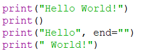
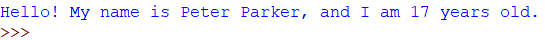
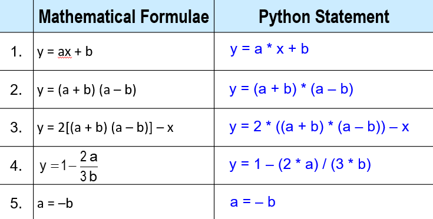
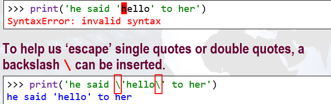

First of all, a warm welcome to Python programming! Python is a general purpose and high level programming language with a comprehensive set of libraries.
You can use Python for developing desktop Graphical User Interface (GUI) applications, websites and web applications. Developed in early 1990s by Guido van Rossum, Python allows you to focus on core functionality of the application by taking care of common programming tasks. The simple syntax rules of the programming language further makes it easier for you to keep the code base readable and application maintainable.
Characteristics:
Easy to read and learn
Clean look with few unnecessary symbols
Easy to keep up to date
Shortcuts in IDLE
While programming, it is important to take note of the syntax (or rules) as well as the program structure (or the format) so that errors can be avoided.
In computer science, the syntax of a computer language is the set of rules that defines the combinations of symbols that are considered to be a correctly structured document or fragment in that language. The syntax of the Python programming language is the set of rules which defines how a Python program will be written.
Languages have formats to follow, e.g. formats for writing letters, writing memos, reports, etc.
Programming languages also have its own format or program structure to follow when writing a program. This differ depending on the programming language used.
Components in Python
Identifiers
Identifers are names defined by the programmer.
A few rules to tale note while defining identifiers include:
They are Case Sensitive
They begin with lowercase letter
They cannot begin with a digit
They contain only letters, digits or underscore
Identifiers should have meaningful names
Reserved Keywords
It is important to take note that there are some special words that are not allowed for use as identifiers. These are known as Keywords. These keywords are reserved by Python for special use.
Statements and Comments
Statements in Python are separated by a new-line character, or the return key.
If the statement is too long, you can use a backslash (\) to continue the statement to the next line.
Comments can be used to explain the meaning or logic of Python code. Comments can be used to make the code more readable. These comments are just explanations and are ignored during program execution.
For single-line comment, type after the hash character #. A comment in Python starts with the # , and extends to the end of the physical line.
For multi-line comment, enclose in triple-quote in your code, and place your comment inside it.
Print
The print() function prints the specified message to the screen, or other standard output device. The message can be a string, or any other object, the object will be converted into a string before written to the screen.
To make the next print statement print at the end of the current print statement, use end = "" .

Values and Data Types
A value is one of the fundamental things, like a letter or a number, that a program manipulates.
In Python and other programming languages, values and data are classified into various data types according to their characteristics and usage.
Data types represent a kind of value which determines what operations can be performed on that data.
Numeric (integer or float), non-numeric (string) and Boolean (true/false) data are the most used data types.
Python has a function called type which can tell you the type of a value.
Strings belong to the class/type str.
Integers belong to the class/type int.
Float belongs to to the class/type float.
Question: What is the datatype of this statement?
print(type(2.0/1))
Variables
A variable is a kind of storage box used to store values, so that these values can be used or altered later in the program.
A variable must have a name, which must be a valid Python identifier.
Remember: Variable names should be meaningful names that reflect the nature of the value stored and begin with a lowercase letter.
You can store a value in a variable, change the contents of a variable, and also retrieve and use a stored value.
A variable has a type upon assignment. From the above example, string "Peter" is given a type str, while integer 17 is given a type int.
A variable is allocated a place in computer memory when you "assign" a value to it.
Variables can store a fixed value or an outcome of a calculation. Variable assignment is always in this format: variable = value
Finally, to display the value of a variable, simply use the print statement. There are mainly two concatenation(joining) methods to join two or more strings together.
Method 1: Using commas
Commas automatically inserts a spacing in between each parameter.
Method 2: Using '+'
Using '+' directly concatenates the strings together, giving better control over how the string will be displayed.
It is important to type cast variables that are not string into a string variable using str(variable) .

Chapter 2.1 : Operators & Interactivity
Strings
Different quotation marks can be used to enclose a string.
Strings in Python can be enclosed in either:
Single quotes ('xxx')
Double quotes ("xxx")
Triple quotes ('''xxx''') or ("""xxx""")
Since triple quotes are also used for comments, this means that strings enclosed in triple quotes can span multiple lines.
Remember to close the string using the same quotation mark that you have used at the beginning of the string. (e.g If start with ' , end with ' and not ")
Operators
Operators are symbols in programming languages to perform processing actions.
Arithmetic Operators
Assignment Operator
Relational Operators
Logical Operators
Arithmetic Operators:
Order of Arithmetic Operators
When more than one operator appears in an expression, the order of evaluation depends on the rules of precedence. Below is the order of precedence from highest to lowest.
Computing math formulas in Python
The table below shows you how to write Python statements that compute various mathematical formulas involving addition, subtraction, multiplication and division.
All multiplications require the multiplication operator. You can use parentheses to override the precedence rules. You do not use square brackets unlike in mathematics.

Assignment Operator
Assigns value to variable. Uses the equal sign. Assignment is from right to left.
e.g.
k = 6
k = k + 1
The above example adds 1 to k and assigns the new value back to the variable k.
Instead of writing k = k + 1, using k += 1 also performs the same operation.
A simple assignment would be variable = expr, where the variable is an identifier and expr is an expression.
The expression on the RHS is evaluated to produce a value which is then associated with the variable named on the LHS.
Variables can be reassigned as many times as you need during the execution of your program.
Simultaneous Assignment
Several values can be calculated at the same time. Simply use commas (,)
Relational Operators
Relational operators compare the two operands and produce a Boolean value of either True or False.
If x = 4, y = 3, z = 2
Logical Operators
Logical operators allow us to build more complex Boolean expressions from simpler Boolean expressions.
If x = 1, y = 4, z = 14
Order of Operators
Type conversion
Use int(), float(), str(), and bool() to convert values and variables into integer, floating point, string, and boolean types respectively.
Program Interactivity
variable = input(prompt)
Built-in function in Python for getting input from user and store it into a variable.
You need to convert the string to int or float in order to use the numeric value.
e.g.
height = int(input("Enter your height in cm: "))
print("Height + 10cm is:", height + 10)
Output: Enter your height in cm: 172 Height + 10cm is: 182
Math Functions
Python comes with a large number of modules (also know as libraries) of its own which have functions for different purposes. Most common module is math that has mathematical functions for computation.
Math Functions and Constants
Question: Is the result true or false?
import math
print(int(20/14) == math.ceil(11/110)))
Chapter 2.2 : Functions
Assume that you have written a block of code, and you want to use it again in another part of your program.
There is a very efficient way to reuse the code that you have written, and that is to use Functions.
Defining a Function
In order to do that, you will need to insert your block of code into a function, using the def keyword, followed by the name of your function, followed by any parameters needed to perform the function. This process is called defining a function.
After defining the function, if you want to return any values calculated in the function back into the main program, simply use the return keyword, followed by the variable/value to return. Note: The body of your function should be indented.
Calling a Function
After defining a function, you can use the code that you have defined in your function by calling for it. Simply type the name of the function, along with the required parameters in the parenthesis.
Chapter 2.3 : String Formatting & Debugging
Escape Sequence
Let's say we need to print a pair of single quotes as part of a string. If you enclose the string within single quotes, you will get an error.
The solution is to insert a backslash before each single quote in the string.
The backslash together with the single quote form an escape sequence.

There are other escpae sequences but the two most commonly used are: \n : new line \t : tab stop
String Formatting
Python provides 2 ways to do String Formatting, allowing multiple substitutions in a string.
Method 1: % operator
Method 2: format()
As of Python 3, the 2nd method is the preferred standard.
format() method allows for rearrangement in output without changing order of arguments:
For strings, integers and floating point:
Padding and Alignment
By default, values will take up as many characters as needed to represent the content. It is also possible to pad a value to a certain length.
The format() method defaults alignment to the left for strings. For other types, the alignment is to the right. Example of padding the length of 10 character spaces to the content:
Formatting using format():
Example of using format() in program:
Debugging
Different types of errors can occur - popularly known as bugs in a computer program.
It is important for programmers to know how to debug and solve those problems in the program.
Syntax Errors
These are errors due to violation of the language syntax. Python program with syntax error will not run.
E.g. Missing end quote for string
Runtime/Execution Errors
These are errors that occur during running/execution of program.
Python program will run until code with error, then program will terminate with error message.
Logic/Semantic Errors
These errors occur when the logic of the program is not written correctly.
The program is able to run but output (result) produced is incorrect.
E.g. Wrong formula, forgetting precedence of operators in expression, wrong conditions in if else statements.
Debugger
It is very difficult to figure out the bugs in your progran simply by eye inspection.
Hence, programmers make use of a Debugger, a program that allows stepping through code line by line in the same order of execution, and showing what values are stored in variables each step.